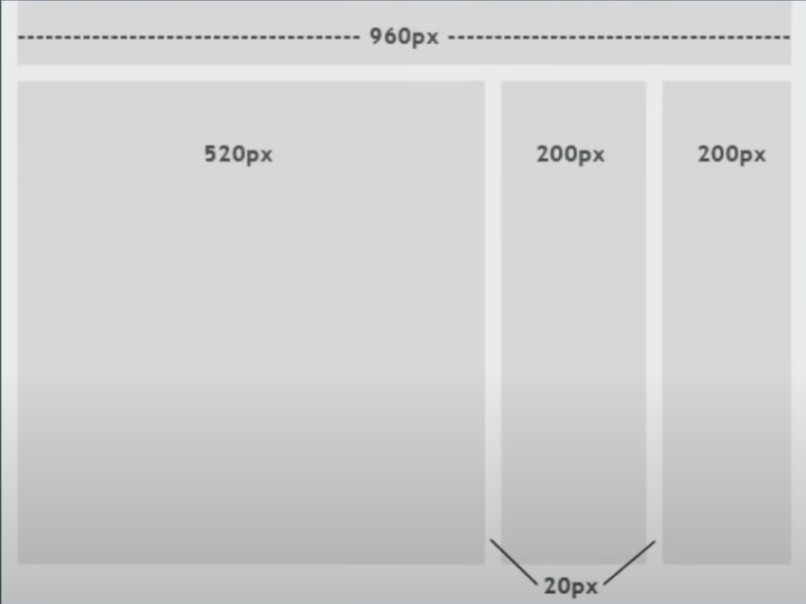
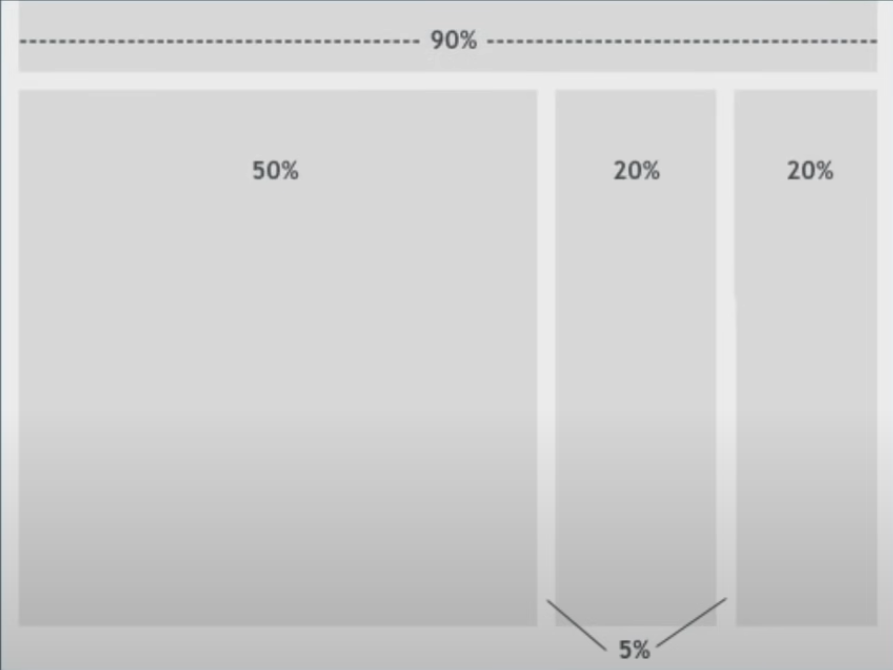

Responsive Web Design
Sebuah pendekatan yang menyarankan agar proses perancangan dan pembangunan sebuah web app harus merespon terhadap perilaku pengguna berdasarkan dari ukuran layar, platform dan orientasi layar.
Principles of responsive web design
1. Adaptive vs Responsive Design

https://uxplanet.org
2. Viewport & Viewport Meta Tag
Area pada halaman web yang terlihat oleh user
Viewport Meta Tag
<meta name="viewport" content="width=device-width, initial-scale=1.0">Viewport Meta Tag
<html>
<head>
<meta name="viewport" content="width=device-width, initial-scale=1.0">
<title>My HTML 5 Page</title>
</head>
<body>
...
</body>
</html>
Dengan / tanpa viewport meta tag
3. Breakpoints
- Extra small device / Potrait phone
- < 576px
- Small device / Landscape phone
- ≥ 576px
- Medium device / Tablet
- ≥ 768px
- Large device / Desktop
- ≥ 992px
- Extra large device / Large desktop
- ≥ 1200px
- XX-Large Device
- ≥ 1400px
4. Media query
@media (min-width: 576px) { ... }
@media (min-width: 768px) { ... }
@media (min-width: 992px) { ... }
@media (min-width: 1200px) { ... }
@media (min-width: 1400px) { ... }
5. Fluid layouts

Fixed layout

Fluid layout
.content { width: 960px; }
.left { width: 520px }
.middle, .right { width: 200px }
Fixed layout
.content { width: 90% }
.left { width: 50% }
.middle, .right { width: 20% }
Fluid layout
6. Relative Units
Relative Units
- %
- rem & em
- vw & vh
- vmin & vmax
7. Responsive Media
Responsive Media
- Image
- Video
.img {
width: 800px;
height: 800px;
}
.img {
width: 100%;
height: 800px;
object-fit: cover;
object-position: bottom;
}
8. Flexbox

9. Grid

10. Mobile First Design